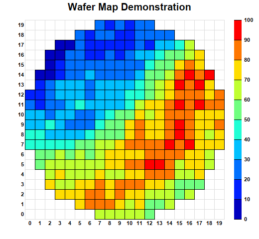

This example demonstrates creating a wafer map.
A wafer map is a discrete heat map with a circular border. (A contour chart can also be used for some applications.) It is called a wafer map because it is frequently used in the semiconductor industry to visualize properties of semiconductor wafers.
This example is similar to
Discrete Heat Map. The circular shape is achieved by setting the cells outside the circle to
NoValue to disable them.
The following is the command line version of the code in "cppdemo/wafermap". The MFC version of the code is in "mfcdemo/mfcdemo". The Qt Widgets version of the code is in "qtdemo/qtdemo". The QML/Qt Quick version of the code is in "qmldemo/qmldemo".
#include "chartdir.h"
int main(int argc, char *argv[])
{
// The diameter of the wafer
int diameter = 20;
double radius = diameter / 2.0;
// The random data array are for a square grid of 20 x 20 cells
RanSeries* r = new RanSeries(2);
DoubleArray zData = r->get2DSeries(diameter, diameter, 0, 100);
// We remove cells that are outside the wafer circle by setting them to NoValue
for(int i = 0; i < zData.len; ++i) {
double x = i % diameter + 0.5;
double y = (i - x) / diameter + 0.5;
if ((x - radius) * (x - radius) + (y - radius) * (y - radius) > radius * radius) {
((double*)(zData.data))[i] = Chart::NoValue;
}
}
// Create an XYChart object of size 520 x 480 pixels.
XYChart* c = new XYChart(520, 480);
// Add a title the chart with 15pt Arial Bold font
c->addTitle("Wafer Map Demonstration", "Arial Bold", 15);
// Set the plotarea at (50, 40) and of size 400 x 400 pixels. Set the backgound and border to
// transparent. Set both horizontal and vertical grid lines to light grey. (0xdddddd)
PlotArea* p = c->setPlotArea(50, 40, 400, 400, -1, -1, Chart::Transparent, 0xdddddd, 0xdddddd);
// Create a discrete heat map with 20 x 20 cells
DiscreteHeatMapLayer* layer = c->addDiscreteHeatMapLayer(zData, diameter);
// Set the x-axis scale. Use 8pt Arial Bold font. Set axis color to transparent, so only the
// labels visible. Set 0.5 offset to position the labels in between the grid lines.
c->xAxis()->setLinearScale(0, diameter, 1);
c->xAxis()->setLabelStyle("Arial Bold", 8);
c->xAxis()->setColors(Chart::Transparent, Chart::TextColor);
c->xAxis()->setLabelOffset(0.5);
// Set the y-axis scale. Use 8pt Arial Bold font. Set axis color to transparent, so only the
// labels visible. Set 0.5 offset to position the labels in between the grid lines.
c->yAxis()->setLinearScale(0, diameter, 1);
c->yAxis()->setLabelStyle("Arial Bold", 8);
c->yAxis()->setColors(Chart::Transparent, Chart::TextColor);
c->yAxis()->setLabelOffset(0.5);
// Position the color axis 20 pixels to the right of the plot area and of the same height as the
// plot area. Put the labels on the right side of the color axis. Use 8pt Arial Bold font for
// the labels.
ColorAxis* cAxis = layer->setColorAxis(p->getRightX() + 20, p->getTopY(), Chart::TopLeft,
p->getHeight(), Chart::Right);
cAxis->setLabelStyle("Arial Bold", 8);
// Output the chart
c->makeChart("wafermap.png");
//free up resources
delete r;
delete c;
return 0;
}
© 2023 Advanced Software Engineering Limited. All rights reserved.